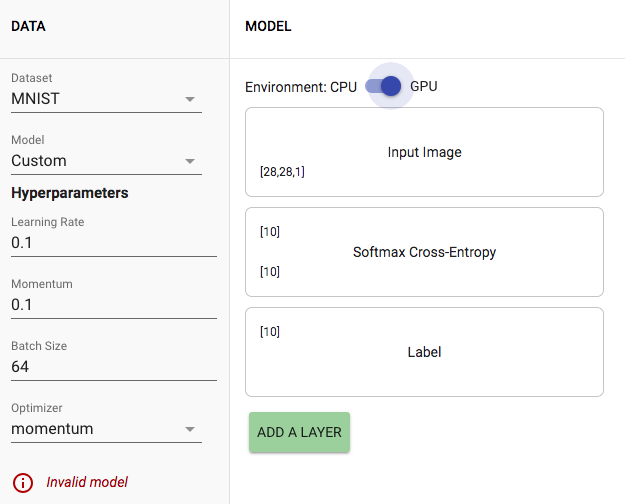

Section 1.1 Building Models with Model Builder
The initial model shown above is marked "invalid" because while the shape of input layer is [28, 28, 1], the Softmax Cross Entropy layer in the middle expects shape of [10]. Because the size of the data doesn't match in the two consecutive layers, the model is invalid.
Problem 1
Initially, the classification shown in Inference section is almost always wrong. This happens mostly because the parameters of the layers (weight and bias) are assigned randomply upon initialization. While the weights and biases are initially set to random values and gets updated through training, since the current model lacks training, the weights' initial random values can't get updated. Moreover, the 10 classification from 0 to 9, are also assigned randomly, which implies that probability of labeling the image correcly is 1/10.
Problem 2
1. Training MNIST and Fashion MNIST
Image above is a snapshot after training MNIST for 5148 images, which took around 6.9 seconds. As demonstrated in the image, the accuracy went dramatically higher compare to the previous model as a result of training. While the observed accuracy ranges from 6.4% to 100%, in average, the accuracy is arround 86.7%. The model trained around 1210 examples per second and performed 1330 inferences per second.
The two images below show the result of traning Fashion MNIST.
The training stats of training Fashion MNIST and MNIST were largely similar. For both data sets, the model trained around 5000 examples -- 5148 examples for MNIST and 5440 examples for Fashion MNIST. The speed and duration of the trainings were also similar, since training MNIST took 6.9 seconds with 1210 examples per second and training Fashion MNIST took 6.7 seconds in total with 1250 examples per second.
On the other hand, the result of inference was noticeably different. First, while the demo performed 1330 inferences per second after training MNIST, it was only able to compute around 1044 inferences per second after training Fashion MNIST. Moreover, the estimated accuracy was significantly different as well. After training MNIST for around 5148 examples, the model had observed accuracy of 86.7% in average, which is fairly high. Yet, despite the fact that the demo trained Fashion MNIST for 5440 examples, around 300 more examples compared to the previous training, the observed accuracy was lower. There were few items that had high accuracy, but in average, the observed accuracy was around 50~60%. This difference can be easily observed by comparing the figures above as well.
2. CIFAR-10 Dataset
Image above shows the result of training CIFAR-10 Dataset.
As suggested by the problem, CIFAR was trained for 90 seconds, during which 56960 examples were trained, with average speed of 1330 examples per second. However, despite the longer training, the observed accuracy was very low. Majority of items were guessed incorreclty, and the observed accuracy was around 45%. Furthermore, the model could only compute 801 inferences per second, which is even slower than the result of training Fashion MNIST.
3. Adding more fully connected layers
Switching back to the MNIST dataset, 3 more fully connected layers were added to the model and 5312 examples were trained.
This model didn't work since the accuracy was NaN (not a number). This can be attributed to the fact that cascading linear layers will eventually explode, since adding a linear layer only adds another linear operation.
4. Input → Flatten → FC(10) → FC(10) → Softmax → Label
As suggested, the accuracy plummetted to 0%. As explained in the previous question, placing fully connected layers consecutively only causes the model to diverge. In order to fix the issue, a nonlinear activation function should be added.
Problem 3 Adding Activation Layer
While adding an activation function (ReLU) solved the problem of adding linear layers consecutively, the observed accuracy was low with average 14%.
As shown in the two images above, making hte first fully connected model wider definitely improved the accuracy. After increasing the number of units to 100, the accuracy increased up to around 85%, when similar number of examples were trained. Also, we can notice that adding an activation layer decreased the speed of training to around 830 examples per second.
Problem 4
While adding an activation function (ReLU) solved the problem of adding linear layers consecutively, the observed accuracy was low with average 14%.
As shown in the two images above, making hte first fully connected model wider definitely improved the accuracy. After increasing the number of units to 100, the accuracy increased up to around 85%, when similar number of examples were trained. Also, we can notice that adding an activation layer decreased the speed of training to around 830 examples per second.